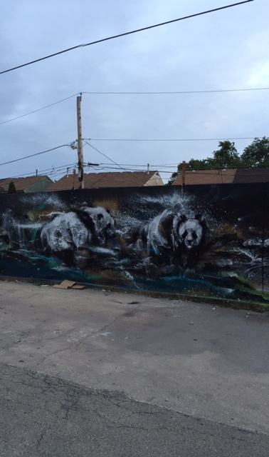

I am a Chicago native who has always found inspiration in my surrounding urban landscape. My mind is often impressed with the rich, diverse sounds, colors, textures and people of the city. Additionally, the juxtaposition of elements that are rough and smooth, soft and hard, old and new in the city...and, how they each co-existj gjhghj gguhiu hkhkkjre dkh gdjk hghdfg kfd j gfdlk jdfjg dlf j glkdfjgk lf djgdklfgj dk fljg ldfkgj ld fk jgld kjg ldf kgjd flkgjdfkg jd fl kg j\\l df kj g l d fjgldfkjgldkfjglkdfj lgkfdgjdflk gj dfkg jfdlkgjlkgjd

 ❮
❯
❮
❯